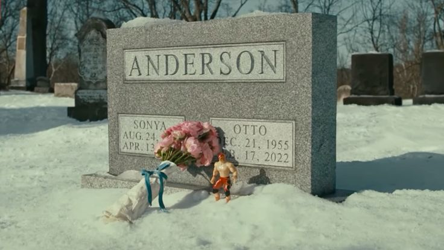

Intrests
Hi! My name is Grace, today I will be telling you about my faviorte movie!
My favorite movie is A Man Called Otto. I watched it on a plane and cried four times it was that emotional! The story hit me so hard with its mix of heartbreak, humor, and warmth. It’s one of those films that makes you reflect on life, relationships, and the power of human connection.
